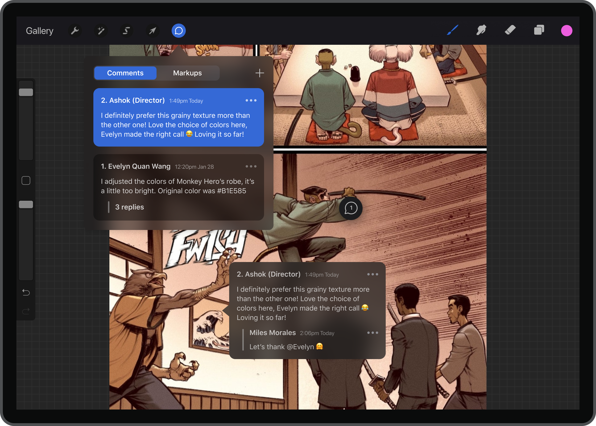
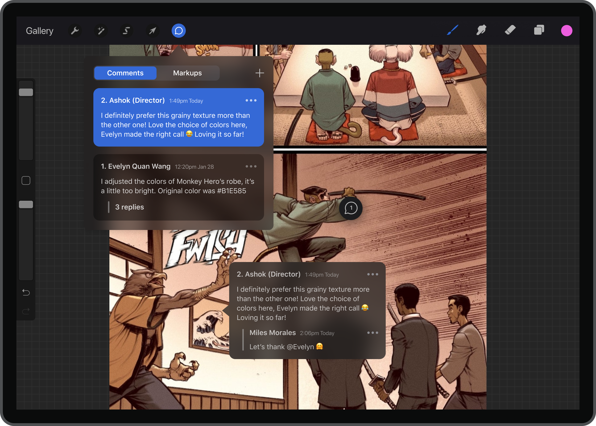

Collaboration on Procreate is tedious.
Currently, users rely on third-party applications to share files with others (Google Drive, Dropbox). Direct feedback cannot be received or provided on a file either, which can cause communication delays or confusion.
Moreover, adding collaboration to Procreate is beneficial in online educational and professional settings where communication, learning, and working together have become limited by digital technology and remote work.